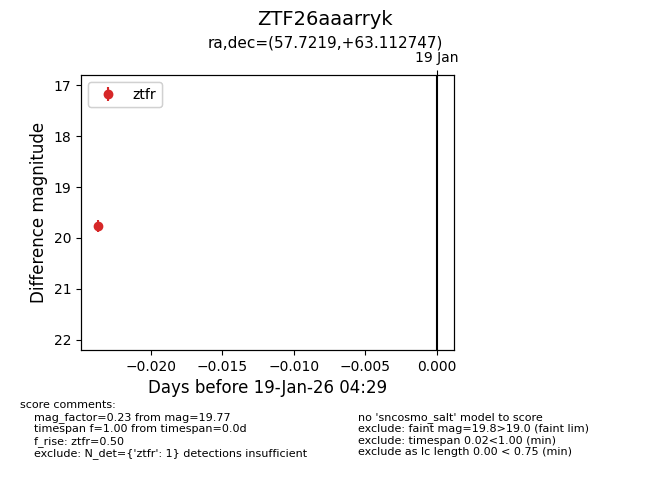
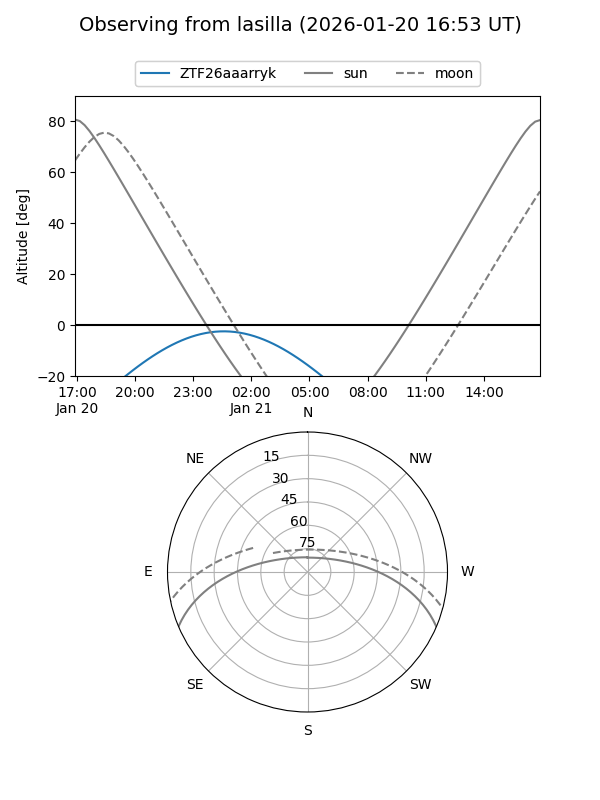
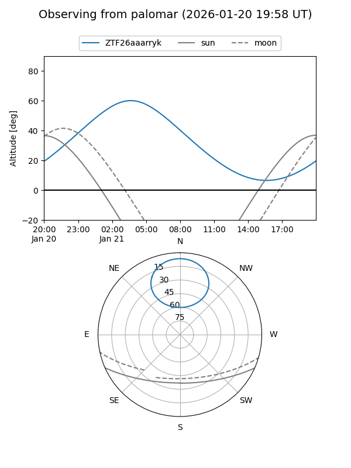

ZTF26aaarryk
Target ZTF26aaarryk at 2026-01-21 04:31
Aliases and brokers:
FINK: link
Lasair: link
ALeRCE: link
alt names
ZTF26aaarryk (ztf,fink_ztf)
Coordinates:
equatorial (ra, dec) = 57.7219,+63.11275
equatorial (HMS+DMS) = 03:50:53.25,+63:06:45.89
galactic (l, b) = (141.6788,+6.97340)
Flags:
Photometry:
last ztfg=20.21, ztfr=19.77
1 ztfg, 1 ztfr detections
Lightcurve

Visibility


Additional plots